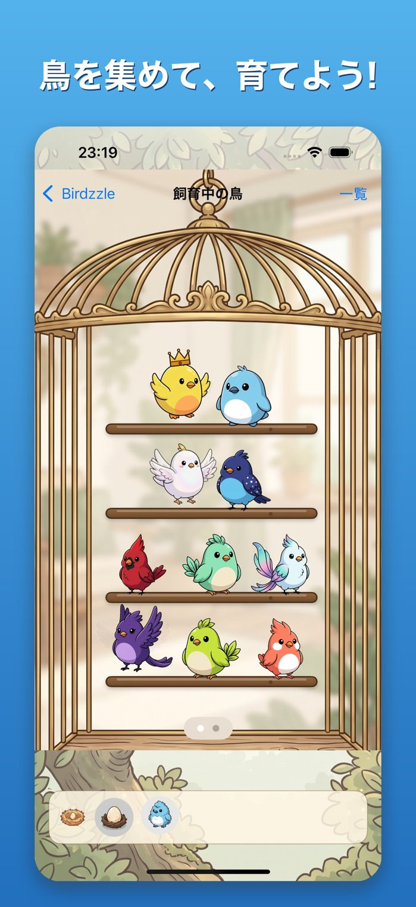
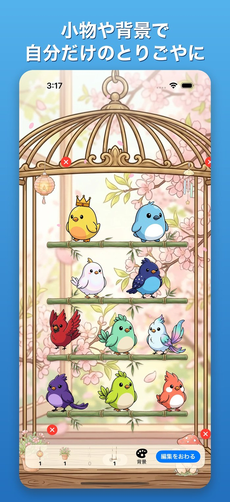
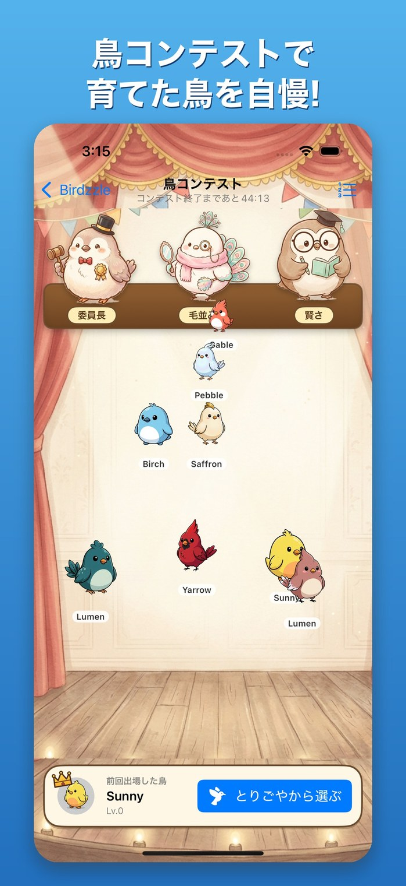
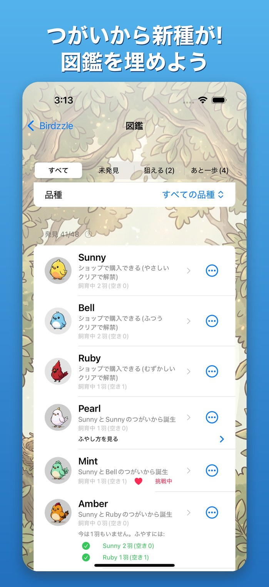
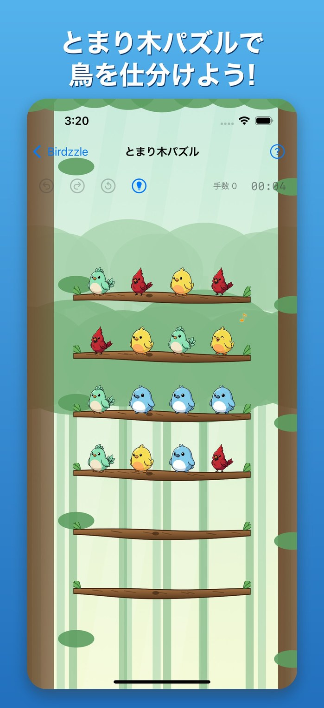
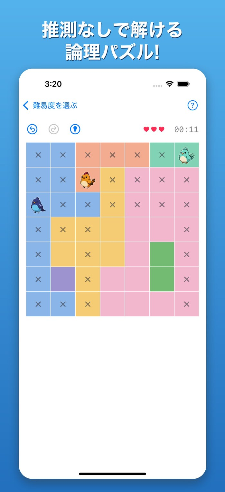

解くほど、鳥が増える。育てて、コンテストへ。
各行・各列・各なわばりにちょうど1羽。クイーンズ／スターバトル／ツーノットタッチ系の本格ロジックパズルを解いて、鳥を迎え、育て、図鑑を完成させよう。
App Storeでダウンロード無料・オフラインで遊べますインストール済みの方はアプリで開く
推測ゼロ
全問題が一意解で、論理だけで解けることを確認済み。運やあてずっぽうは要りません。
鳥を育てる
クリアで得たコインで卵や鳥を迎え、つがいにして繁殖。新しい種を見つけて図鑑を埋めます。全48種。
遊びやすい
スタミナ制・プレイ回数制限なし。Undo/Redoは無制限・無料。完全オフライン。13言語対応。
鳥を迎えて、育てて、増やす「とりごや」
パズルをクリアして貯めたコインで卵や鳥を迎え、餌をあげて育てます。卵からひな、成鳥へ。育った鳥は、ときどきパズルのヒントを持ち帰ってくれます。
- ガチャなし。鳥はショップ購入・クリア報酬・繁殖で手に入ります
- つがいにして繁殖。名前もつけられます
- 確率はすべて「確率一覧」でいつでも公開

NEWとりごやを飾って、鳥となかよし
季節の背景・とまり木・小物で、とりごやを自分好みに飾れます。鳥をなでたり、羽づくろいをしたり、歌をまねたり。ホームのBGMも選べて、のんびり癒されます。
- 小物は、ショップで好きなものを定価で購入(抽選はありません)
- あそぶほどなつきが上がります(1回のイベントに1羽1回まで)
- ホームのBGMは、通常の曲・森・雨・せせらぎから選べます
- ゆっくり遊びたい日は、タイマーなし・ミスなしの「のんびりモード」

NEW毎時間開催の「鳥コンテスト」
育てた鳥の声色・毛並み・賢さで競う、1時間ごとのコンテスト。ブロックの中で順位がつき、ほかのプレイヤーの鳥(と、ときどきダミー)と非同期で対戦します。
- 鳥ごとに声色・毛並み・賢さを育成。専用アイテムで伸ばせます
- なつきは、とりごやのイベントでカゴをタップし続けるほど上がります(放置では育ちません)
- 報酬はゲーム内コインとアイテムの固定額。現金とは無関係です

全48種の図鑑を完成させよう
ショップで買える鳥はごく一部。ほかの鳥は、つがいの組み合わせで見つかります。図鑑の「狙える」「あと一歩」や「おまかせでつがい」が、次の新種探しを手伝います。
- 発見済みの種は図鑑に記録
- 未発見の種は、組み合わせのヒントが「かも…?」で見えます
- 増えた鳥は「まとめて売る」で整理

鳥を仕分ける「とまり木パズル」
とまり木に並んだ鳥を、同じ種類ごとに集めるパズル。移せるのは、一番上に並んだ同じ種類のまとまりだけ。全問がソルバーで「必ず解ける」ことを確認済みで、運に左右されません。
- ミスの回数制限はありません
- Undo/Redo/最初からは無制限・無料
- やさしいから達人まで4段階

推測ゼロのロジックパズル
各行・各列・各なわばりにちょうど1羽、鳥同士は斜めにも隣り合えない。全問が一意解で、論理だけで解けることをソルバーで確認済みです。
- スタミナ制・プレイ回数制限なし
- Undo/Redoは無制限・無料
- 完全オフライン、13言語対応

確率も変更履歴も、すべて公開
繁殖・ヒント排出・鳥が元気をなくす確率は、アプリの「確率一覧」でいつでも確認できます。バランスを変えたときは、変更履歴で告知します。
- 繁殖・ヒント・コンテストの数値を公開
- 変更履歴はこのサイトにも掲載
ルール
- 各行にちょうど1羽
- 各列にちょうど1羽
- 各なわばり(色の領域)にちょうど1羽
- 鳥同士は上下左右・斜めに隣り合えない
鳥図鑑


このサイトについて
Birdzzleの公式サイトです。解き方の解説、鳥図鑑、確率・経済の変更履歴、よくある質問を公開しています。
Birdzzleで遊んでくれている方へ: 気に入っていただけたら、App Storeのレビューで応援してもらえるとうれしいです。いただいた声は、これからのアップデートの参考にします。
App Storeでダウンロード無料・オフラインで遊べますインストール済みの方はアプリで開く